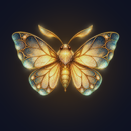
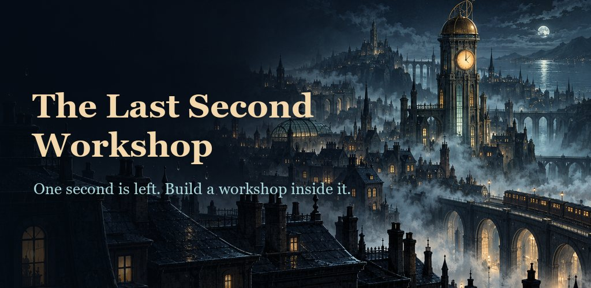
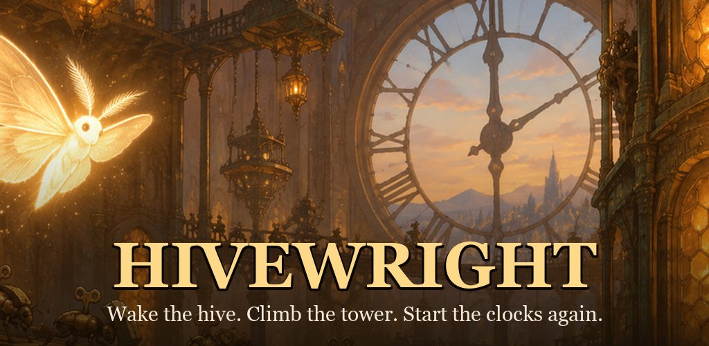
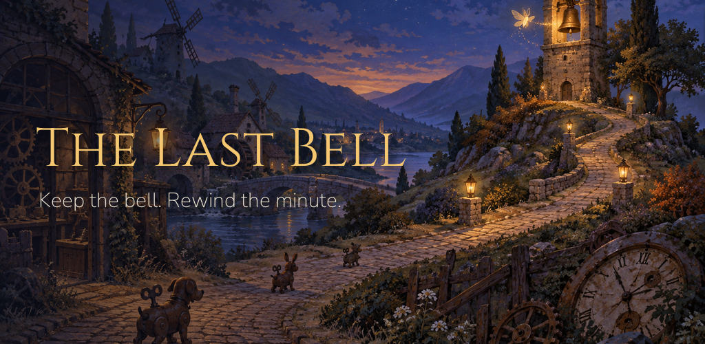

BlairsLab
Small, patient games about time. Made with care in Australia.

The Last Second Workshop
Across the city of Meridia, every clock agrees on the same impossible second. Build a clockwork workshop inside it, connect your machines, and repair the paths that bring a stopped city home.
Get it on Google Play
Hivewright
Deep inside a stopped clock tower, a hive of tiny wind-up insects is still ticking. Grow the hive, send swarms up the stair against the creeping Rust, and start the great clocks again, one hundred floors at a time.

The Last Bell
In a valley where every clock has stopped, one bell tower still keeps time. Raise towers by the roads, mend the rusty wind-ups walking towards the bell, and when a minute goes wrong, ring the bell backwards and play it again.
One world, one moth. Every BlairsLab game is set in the same world, and wherever time is held, wound, stopped or retried, a lantern moth turns up. Each game is complete by itself, and owning one never gives you anything in another.
Chat with other players, share ideas, report bugs and read each update's notes.